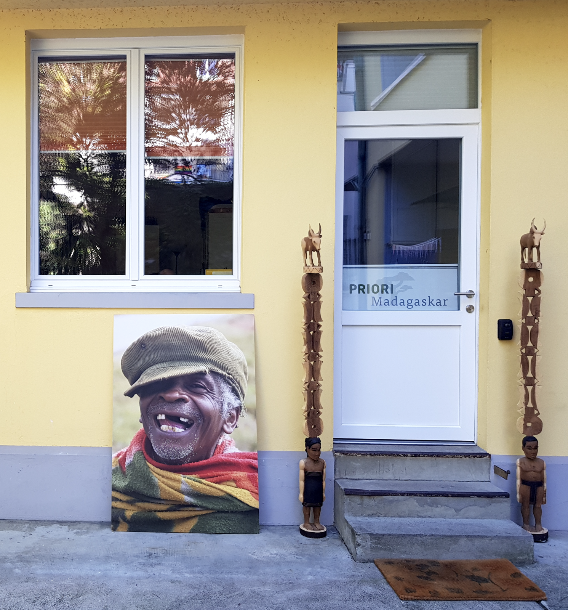

Voyage solidaire du CEAS
Il s’agit d’un voyage solidaire, organisé par l’ONG neuchâteloise, le Centre Ecologique Albert Schweizer (CEAS) en partenariat avec PRIORI Antananarivo.
Lire la suite →La Maison de Madagascar · Bâle
Bienvenue – Tonga soa !
Si, après de multiples clic et liens divers sur la toile, vous nous rencontrez sur cette page, ce n’est certainement pas une coïncidence…
Alors, puisque le destin s’en mêle, permettez-nous de nous présenter !
Notre équipe, tant en Suisse qu’à Madagascar, est essentiellement constituée de personnes que d’heureuses circonstances ont œuvré à se faire rencontrer dans le cadre d’activités ou de projets de développement tout d’abord, puis dans le domaine du conseil de voyages.
En effet, nos engagements personnels en matière de développement, à Madagascar et ailleurs en Afrique ou en Asie, contribuent à façonner notre vision du voyage, à partir à la découverte d’autres cultures, dans un souci de partage et d’échanges mutuellement favorables !

Si vous aimez voyager l’œil ouvert, à la recherche d’échanges humains, La Maison de Madagascar est prête à vous accueillir et se tient à votre disposition pour vous informer, pour vous aider à sortir des sentiers battus, pour faire de votre découverte de ce magnifique pays un souvenir unique et inoubliable…
N’hésitez pas, Madagascar, pays du mora-mora (doucement, doucement) veut surtout dire pays qui vaut la peine que l’on prenne son temps…pour s’informer, pour développer un projet de voyage unique et choisir un parcours en résonnance avec ses propres vibrations et émotions..
Et.. comme les Malgaches le disent : « vous, les Suisses, vous avez la montre, nous, Malgaches, nous avons le temps »….
Alors, venez, déposons nos montres et prenons le temps de planifier ensemble votre voyage à Madagascar….
A bientôt !
Il s’agit d’un voyage solidaire, organisé par l’ONG neuchâteloise, le Centre Ecologique Albert Schweizer (CEAS) en partenariat avec PRIORI Antananarivo.
Lire la suite →
Elle est aussi appelée le triangle de la vanille. Un peu oubliée, mais si variée… C’est une région verte, tropicale, qui abrite la plus importante zone de culture de vanille au monde .
Lire la suite →
Madagascar, la Grande Ile de l’Océan Indien, possède des parcs nationaux dont les formes de vie sont apparues au cours de millions d’années d’isolement. Grâce à cette “bénédiction de l’isolement”, la flore et la faune ont eu tout le temps de se développer d’une manière très différente du reste du monde. Raison suffisante pour que Madagascar mérite amplement le nom de 7ème continent.
Lire la suite →
A la recherche d’un type de sport spécifique à exercer dans un environnement un peu rudimentaire ? Madagascar offre des opportunités intéressantes !
Lire la suite →
Découvrez l’aventure moto à Madagascar avec notre circuit CrossMadagascar : Enfourchez une moto chinoise et traversez Madagascar en off-road avec un guide expérimenté ! Vous n’oublierez JAMAIS notre CrossMadagascar…
Lire la suite →
Osez un Voyage-surprise à Madagascar ! Offrez-nous 2 semaines de votre temps sur place à Madagascar, nous nous occupons du reste !
Lire la suite →Il est temps de vous faire signe et surtout de vous remercier pour la parfaite organisation de notre voyage. Nous l’avons vécu en toute tranquillité, les programmes quotidiens étant planifiés soit par les Soeurs, soit par vos services à travers Mbola qui a été pour nous un chauffeur hors pair, un guide discret et un compagnon de route des plus sympathique. Il était attentif à nos besoins et toujours disposé à répondre aux nombreuses questions de mon mari qui découvrait Madagascar pour la première fois.
Lire la suite →Un voyage à Madagascar est une expérience hors du commun, non seulement par la découverte d’une nature exceptionnelle, mais également au travers de rencontres avec la population et la culture malgache.
Lire la suite →PRIORI Reisen GmbH · Holeestrasse 6 · 4054 Basel